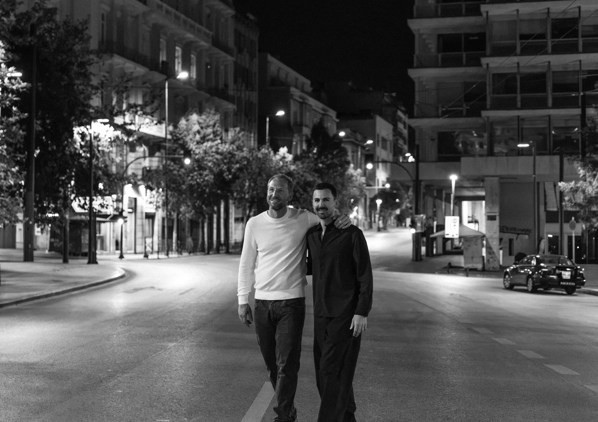

Jack & Lefteris
It’s on your save-the-date.

You are invited
02—04—27
Friday, the second of Aprilsix in the evening
Our ceremony will take place at the iconic Old Marylebone Town Hall, on Marylebone Road, next to The Landmark London.
Please let us know by the end of November 2026. If your plans change, please let us know.